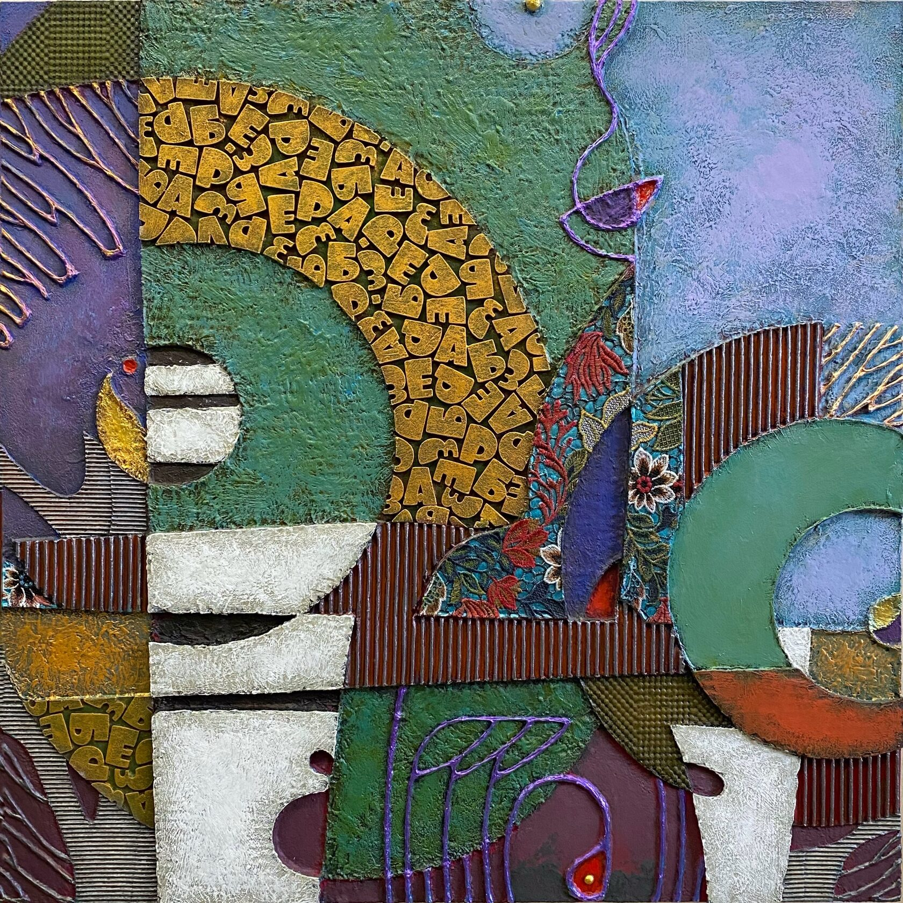

Произведение в разделе «Живопись и графика»
РАЗУМ. СЕРИЯ ЭВОЛЮЦИЯ.
ТЕХНИКА: мдф, живопись, смешанная техника - контуры, акрил, мастики, ткань, аппликация, картон, металлические пудры, воск, патина.
ГОД: 2023.
РАЗМЕР: 70х70 см.
Современная историческая наука и антропология всё больше и больше приходят к выводу, что совсем не «труд создал человека». Да, утилитарное стремление к выживанию и бытовой устроенности сыграли свою роль в нашей эволюции, но в основе превращения человека в человека лежит совсем другое. Буквально в конце 90-х появляются новые археологические находки, фактически переворачивая всю картину антропогенеза (12-тысячелетние храмовые комплексы Гёбекли Тепе и поселения Невали-Чори). Они показывают, что именно производство человеком или проточеловеком неких странных творческих практик вызывает бурные трансформации, и сознания, и культуры, и социальности. Порождая впоследствии великие цивилизации и в целом такой феномен как большое разумное человечество.
То есть, когда наш вид, по каким-то неведомым причинам, внутри пространства своего сознания, в процессе взаимодействия со средой, вдруг порождает или открывает воображение, метафору, то есть абстрактную идею - то именно это приводит к развитию сознания в его сложные формы. Иначе говоря, сначала метафора, а затем утилитарность, а не наоборот. Сначала метафора, как абсолютно новый способ существования, и только затем, развертывание многообразия утилитарности (экономики, хозяйствования, сложной социальности и тп). Эта утилитарность - есть практическое раскрытие новых возможностей, подаренных разуму рождением метафорического видения мира.
Серия «Эволюция» посвящена как раз этой идее - как, взаимодействуя с образами (воспринимая и создавая) человечество проходит свой путь. На этом пути, как водится, что-то теряется, что-то приобретается.
Если посмотреть на нашу с вами современную действительность, то можно констатировать, что мы несколько заблудились. Активно осваивая в последние десятилетия начальные, практические пласты творческого пространства (с помощью массовой культуры, которая как всегда и зло и добро, и плюс и минус)… так вот осваивая в массовом порядке эти первичные пласты творчества, человечество одновременно забыло о глубине этого творческого пространства. Забыло о том, что это не только удобное пространство простой сиюминутной самореализации. Что вообще-то - это онтологическая категория, бытийная, фундаментальная, лежащая не только в основе рождения нашего вида как особого, как разумного… но еще и имеющая непосредственное отношение к принципам мироздания.
Пренебрежение к воображению - может очень дорого стоить человечеству, тому самому человечеству, которое собственно как человечество и возникло то в процессе эволюции и взаимодействия со странным миром воображения. Миром, который иранские мистики назвали «Страна Нигде».